StintPrivacy Policy
Last updated 2 September 2026
Stint is a planner for shift workers, made by the Stint team. This policy explains what Stint does and does not do with your information. The short version: your schedule lives on your device. Stint asks you to sign in with Apple once so your data is keyed to you and can come back on a new phone; after that the app works with no signal at all.
On your device
Stint has no analytics of any kind. The file on your phone is the original: your schedule, sleep settings, plans and pay rates are written there first, and every screen reads from it, so the app is fully usable offline once you have signed in.
Your Stint account and sync
Signing in with Apple is required once, and it is what keys your data to you. Stint then keeps one private copy of your schedule on its own service, built on Cloudflare Workers and D1. That copy holds what you see in the app: your shifts and pattern, your plans, your sleep hours, your pay rates, and the optional name, job title and workplace you may have entered. The row is keyed to the Apple identifier your session token proves, and only that token can read it — we never sell it, share it, profile it, or use it for anything but syncing it back to your own devices.
What never leaves your device: sleep measured by Apple Health. It is stripped from every copy that goes off the phone, to iCloud and to Stint's service alike.
You can remove the stored copy at any time with Delete account in the You tab; the schedule on your phone is yours and stays. You can also take everything with you — the You tab exports a full JSON backup or a spreadsheet of your shifts. Separately, across Apple devices on the same Apple ID, Stint keeps your schedule in sync through your own iCloud (Apple's key-value store) — that copy stays with Apple under your account and never passes through a Stint server. Erase all my data clears it.
Health data
If you allow it, Stint reads your sleep data from Apple Health so its picture of your day matches what actually happened. This is used only on your device to improve Stint's own estimates. Stint never writes to Health, never shares health data, and never uses it for advertising or any other purpose. Turn it off at any time in Settings or in the Health app.
Calendar
If you use the export feature, Stint writes your shifts into a dedicated calendar named Stint, which you can share with family from Apple's Calendar app. Stint never reads or changes your other calendar events. Removing the export deletes only that Stint calendar.
Sign in with Apple
Signing in uses Sign in with Apple, so there is no password. Stint receives only the identifier Apple provides and, if you share it, your name. That identifier is what your synced schedule is tied to. Sign out to disconnect on this device, or use Delete account to erase it from the backend entirely.
Price
Stint is free, in full. There is no subscription, no trial, no one-time unlock and no advertising, and the app contains no payment code of any kind — so Stint never sees, stores or processes payment details.
No tracking, no ads
The Stint app contains no advertising, no tracking, and no third-party SDKs. Nothing about you is sold, shared, or profiled. Stint does not use the Advertising Identifier and does not track you across apps or websites. Your schedule is stored by our infrastructure provider (Cloudflare) purely to host that data for you; they process it on our behalf and never for their own purposes.
Children
Stint is a general-audience productivity app and is not directed at children. It does not knowingly collect any information from anyone, including children.
Changes
If this policy changes, the updated version will be posted here with a new date. Material changes will be reflected in the app.
Contact
Questions about privacy? Email hello@stint.uz.